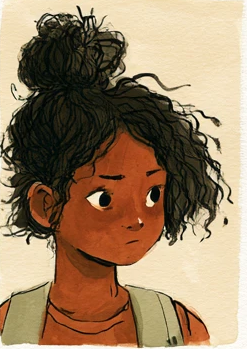
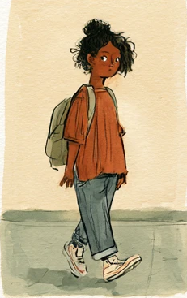
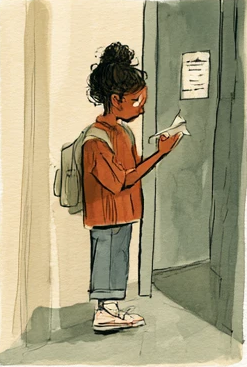
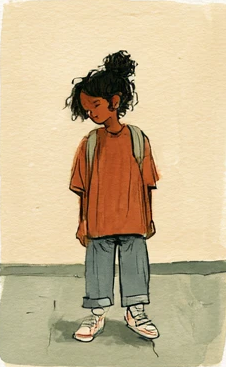
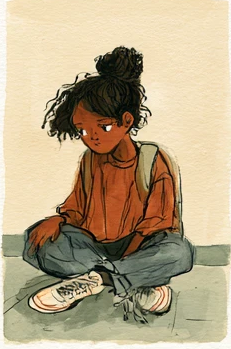
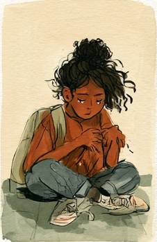
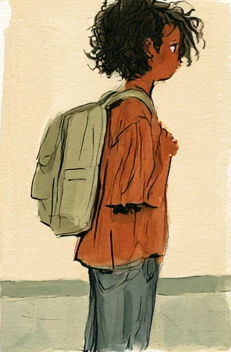
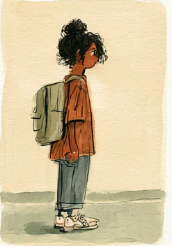
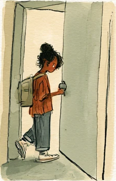

Panel 05 · the one everybody skips
Comics · no words needed
Nothing
is happening.
A girl turns up somewhere she did not pick, reads a note on a door, and waits. That is the whole story. Nobody says anything in any of it.
You already know
what her shoulders
mean.
what her shoulders
mean.
Between Sundays · Issue 001 · Page 30








Panel 09
The door
opens.
Most of a life looks like the small ones. Almost nobody draws those. Go back and look at the first panel again — she is not alone in any of them. She just cannot see it yet.
“I am with you, and will keep you wherever you go.” — Genesis 28:15